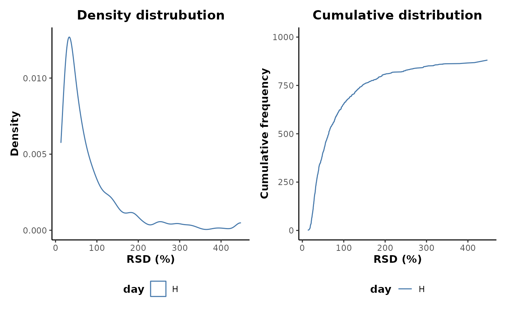
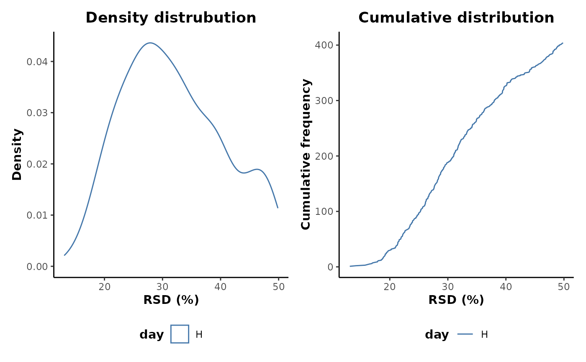

Quality control (QC) sample pre-treatment methods.
QCimpute(
d,
cls = "class",
QCidx = "QC",
occupancy = 2/3,
parallel = "variables",
seed = 1234
)
# S4 method for AnalysisData
QCimpute(
d,
cls = "class",
QCidx = "QC",
occupancy = 2/3,
parallel = "variables",
seed = 1234
)
QCoccupancy(d, cls = "class", QCidx = "QC", occupancy = 2/3)
# S4 method for AnalysisData
QCoccupancy(d, cls = "class", QCidx = "QC", occupancy = 2/3)
QCremove(d, cls = "class", QCidx = "QC")
# S4 method for AnalysisData
QCremove(d, cls = "class", QCidx = "QC")
QCrsdFilter(d, cls = "class", QCidx = "QC", RSDthresh = 50)
# S4 method for AnalysisData
QCrsdFilter(d, cls = "class", QCidx = "QC", RSDthresh = 50)S4 object of class AnalysisData
info column to use for class labels
QC sample label
occupancy threshold for filtering
parallel type to use. See ?missForest for details
random number seed
RSD (%) threshold for filtering
An S4 object of class AnalysisData containing QC treated data.
A QC sample is an average pooled sample, equally representative in composition of all the samples present within an experimental set. Within an analytical run, the QC sample is analysed at equal intervals throughout the run. If there is class structure within the run, this should be randomised within a block fashion so that the classes are equally represented in each block throughout the run. A QC sample can then be injected and analysed between these randomised blocks. This provides a set of technical injections that allows the variability in instrument performance over the run to be accounted for and the robustness of the acquired variables to be assessed.
The technical reproducibility of an acquired variable can be assessed using it's relative standard deviation (RSD) within the QC samples. The variable RSDs can then be filtered below a threshold value to remove metabolome features that are poorly reproducible across the analytical runs. This variable filtering strategy has an advantage over that of occupancy alone as it is not dependent on underlying class structure. Therefore, the variables and variable numbers will not alter if a new class structure is imposed upon the data.
QCimpute: Missing value imputation of QC samples.
QCoccupancy: Feature maximum occupancy filtering based on QC samples.
QCremove: Remove QC samples.
QCrsdFilter: Feature filtering based RSD of QC sample features.
## Initial example data preparation
library(metaboData)
d <- analysisData(abr1$neg[,1:1000],abr1$fact)
## Plot the feature RSD distributions of the H class only
d %>%
keepClasses(cls = 'day',classes = 'H') %>%
plotRSD(cls = 'day')
#> Warning: Removed 119 rows containing non-finite values (stat_density).
#> Warning: Removed 1 row(s) containing missing values (geom_path).

## Apply QC feature occupancy filtering and QC feature RSD filtering
QC_treated <- d %>%
QCoccupancy(cls = 'day',QCidx = 'H',occupancy = 2/3) %>%
QCrsdFilter(cls = 'day',QCidx = 'H',RSDthresh = 50)
print(QC_treated)
#>
#> AnalysisData object containing:
#>
#> Samples: 120
#> Features: 404
#> Info: 9
#>
## Plot the feature RSD distributions of the H class after QC treatments
QC_treated %>%
keepClasses(cls = 'day',classes = 'H') %>%
plotRSD(cls = 'day')
